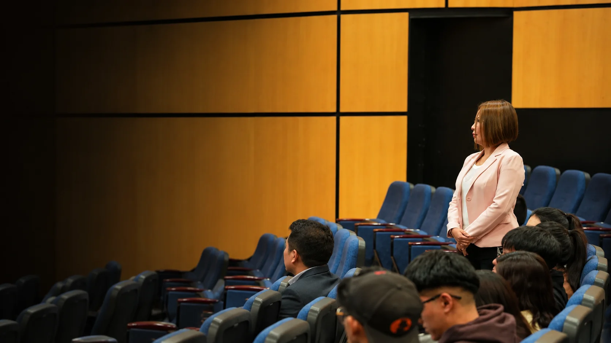
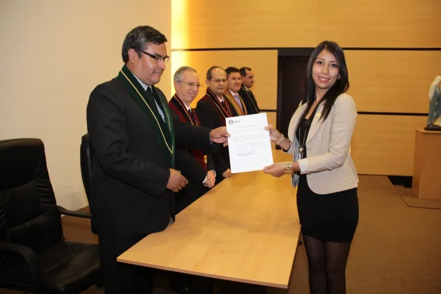
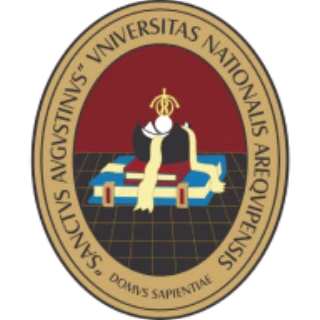
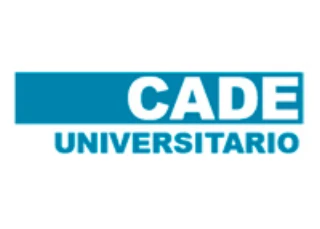
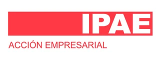
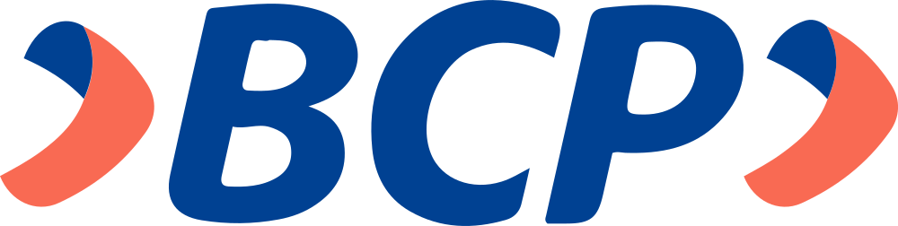

Tesis de bachillerato
Definición del tema, planteamiento del problema y diseño del plan de tesis para obtener el grado de bachiller.
Consultar sobre bachillerato
Te acompaño desde el planteamiento del tema hasta la sustentación, con orientación en metodología, análisis y redacción. Presencial en Arequipa y virtual para todo el Perú.
Cotiza tu asesoríaServicios
Elige tu nivel y cuéntame en qué etapa estás. Trabajo con temas de marketing, administración, negocios, finanzas e investigación de mercados.
Definición del tema, planteamiento del problema y diseño del plan de tesis para obtener el grado de bachiller.
Consultar sobre bachilleratoAsesoría integral: marco teórico, metodología, recolección y análisis de datos, y redacción final para sustentación.
Consultar sobre licenciaturaRigor académico avanzado, revisión de literatura especializada y metodologías cuantitativas o cualitativas aplicadas.
Consultar sobre maestríaAcompañamiento en el diseño de investigación original, contribución teórica y preparación para publicación académica.
Consultar sobre doctoradoMetodología
Un proceso claro, por etapas y basado en la metodología de la investigación, para que siempre sepas qué sigue y qué se espera de cada entrega.
Definimos el problema de investigación y sus objetivos.
Elegimos el enfoque, tipo de estudio y herramientas.
Recolección y análisis de datos con rigor estadístico.
Estructura, argumentación y estilo académico.
Preparación de la defensa y respuestas al jurado.

Sobre mí
Soy Ale Gil, docente universitaria e investigadora en Arequipa. Mi experiencia combina la enseñanza de marketing y administración con la investigación de mercados y la coordinación de programas académicos.
En ambos programas obtuve el primer puesto de promoción y la aprobación unánime de mi tesis.
Ver trayectoria académicaFormación

Universidad Nacional de San AgustínArequipa
CADE UniversitarioPerú
IPAE Acción EmpresarialPerú
Banco de Crédito del PerúPerúExperiencia
He coordinado programas para organizaciones como BCP, Cerro Verde, Anglo American Quellaveco y la Organización Internacional para las Migraciones.
Organización y moderación durante los periodos 2025-II y 2026-I.
Cursos de marketing, comportamiento del consumidor y administración.
Liderazgo en el Departamento de Ciencias Económicas y Empresariales.
Servicios educativos para empresas, entidades públicas y organizaciones sin fines de lucro.
Revista científica de la Universidad Católica San Pablo.
Escuelas de Administración de Negocios y Contabilidad.
Análisis de mercado y redacción en Mercados & Regiones.
Publicaciones
Artículos publicados en Mercados & Regiones, revista peruana de economía y negocios centrada en el sur del país.
FAQ
¿No encuentras tu respuesta? Escríbeme y lo conversamos.
Indícame tu nivel de estudios, el tema y el avance de tu tesis por WhatsApp. Con esa información podemos definir el alcance y conversar sobre el costo.
Principalmente en marketing, administración, negocios, finanzas e investigación de mercados, para los cuatro niveles: bachillerato, licenciatura, maestría y doctorado.
Escríbeme por WhatsApp o completa el formulario de contacto indicando tu nivel de tesis y tema. Te responderé para coordinar una primera conversación.
Sí. Acompaño el diseño metodológico, la recolección y el análisis de datos cuantitativos o cualitativos, y la revisión de formato, citas y referencias en normas APA.
Trabajo de forma virtual y presencial en Arequipa, según la disponibilidad de cada estudiante.
He coordinado programas académicos para empresas y organismos públicos, además de mi experiencia como docente universitaria acompañando tesistas de forma individual.
Contacto
Comparte tu nivel, tu tema y la etapa en la que necesitas apoyo para conversar sobre el alcance de la asesoría.